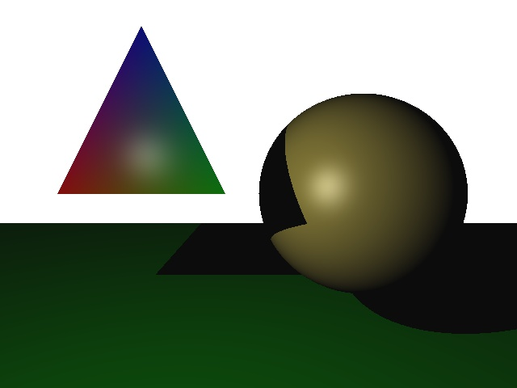
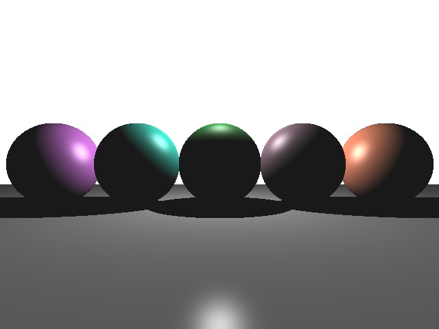
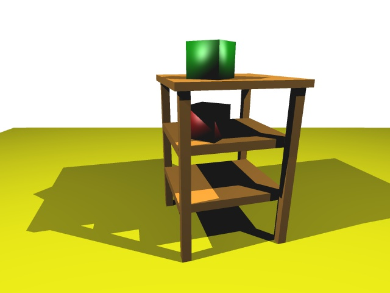
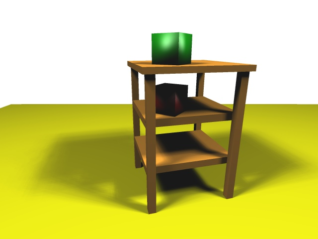

Height Map

Description:
Rendering terrain using a height map.
List of different rendering methods:
- Points
- Lines
- Triangles
- Smooth shading
- Interpolated colors
- Flat shading (2 lights, constant material color)
- Flat shading (2 lights, randomized material color)
Role: Graphics Programmer (Solo)
Language: C++
Shading Language: GLSL
Roller Coaster In Space

Description:
Simulating a roller coaster ride in space using OpenGL.
List of implementations:
- Rendered a roller coaster track using a Catmull-Rom spline with Phong shading
- Rendered an outline for the track using the stencil buffer
- Camera movement along the track based on the tangent vectors at each point on the track
- Created a skybox using online generated textures from here
- Post processing: inverse screen colors with slightly added blue
Role: Graphics Programmer (Solo)
Language: C++
Shading Language: GLSL
Offline Ray Tracer




Description:
An offline ray tracing rendering program that generates images of spheres/triangles with lighting.
Role: Graphics Programmer (Solo)
- Implemented raycasting (view rays and shadow rays) against spherical and triangular objects using 3D math
- Implemeneted Phong shading on the objects that are drawn
- Added support for anti-aliasing and soft shadows
Language: C++